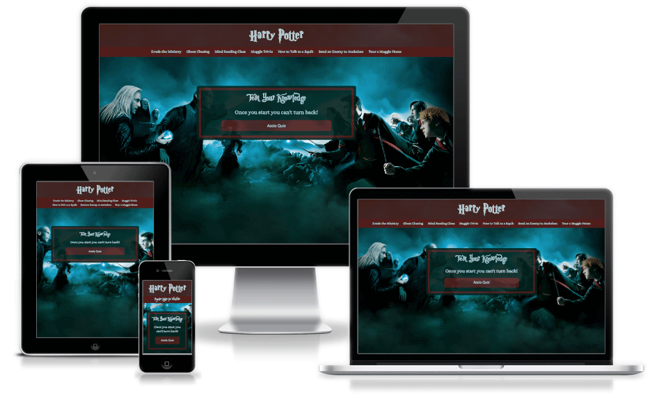

Harry Potter Trivia Game
Live Site | View CodeI did a hackaton with two Java students. We put together a game with 20 questions and stored them along with the appropriate answers in a database. I look back on this weekend as a highlight at The Iron Yard. To challenge myself after the Hackathon I ran the questions through JavaScript, adding a counter to track the number of questions answered correctly.
Technology Used
• Git Collaboration • HTML • jQuery • SASS • Sketch
About This Project
At the halfway point in our 12 week program we did a hackathon with the Java cohort going on simultaneously with my class. I was paired with two Java Students and we were tasked with developing anything fitting the topic "Get Your Game On." Together we decided on doing a trivia game, and my love for Harry Potter had us going in that direction. We spent the afternoon sketching the flow of the site and creating the branding styles. We made a 'List A' and 'List B' to help guide us on what to tackle first. List A was all the features just to get something running on the page. List B was additional features like a timer and counter we wanted to display.
Weaknesses
- Had to learn what the other side does
- Limited time, only had 3 days to put together a project
- I was the only front end developer
Opportunities
- Was able to observe how the back end worked
- Practice working on a sprint
- Was able to be really creative and playful within the design (Check out the links in the navigation)
- Gained experience implementing javascript
- Understood more of Git and it's capabilities
Goal of design
Create something function and within the realm of the topic "Get Your Game On."
Challenges/Problems Solved
There was a major learning curve with neither side having experience with the other. Before we even could think of an idea we showed examples of previous projects to demonstrate where our current skill set was at. The design we came up with was straight forward. Essentailly it is a two page site with a Navigation and div container either holding the questions or the end screen.
To challenge myself more I created the timer in javascript which was functional in time for the presentation! After the project was over I wanted to see if a counter for the correct answers could be added. In order to do this I moved all the questions from the database to an array in javascript. Since the answers aren't random I knew which ones were correct. Therefore it made it easy to have a variable defining the right answer. I created a selected variable and set them all to 0. Then testing in the console I confirmed when the user clicked on a button the selected variable changed to the corresponding button. I ran a function comparing the selected vs right and if they matched I added one to count. When the array finished I set the end div to display their final count along with the message "You're Still a Muggle." (I know, sad :()
A problem I came across was orginally the end container was a seperate page. I quickly realized that the counter variable wouldn't transfer to a seperate html page. An easy solution was making it a div and setting the display to none. This way once the user started the game they wouldn't leave the page.
Additional things I would like to impliment would be more questions, setting them to random and having a 3 life policy. If they run through all their lives it exits them from the game.